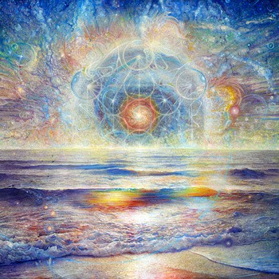

Jan. 29, 2013, 10 p.m. - Jan. 30, 2013, 2 a.m. at Wonder Bar
(Comments)
Add to Google Calendar Add to Outlook/iCal
 album artwork by Adam Scott Miller
HEISS
ABOUT:
Frank Heiss is a Sonic Sorcerer. Using the medium of audio and practice of Alchemy, he Transmutes Black Magic into Light, representing a Portal through which Psychic Energy may pass while Channeling Divine power from the Kosmos as a Conduit making the reaction possible.
BIO:
The son of a contemporary classical composer, Frank Heiss started playing drums at the age of four. He became an accomplished orchestral timpanist and drummer, travelling the world while still in his teens with the Youth Philharmonic Orchestra of New England Conservatory.
In 1989 he earned the Filene Music Scholarship to attend Skidmore College in Saratoga Springs, NY. At Skidmore,he was asked to join the band Conjunction Junction who wrote mostly original songs and performed technically intense covers by bands like King Crimson, The Mahavishnu Orchestra and Rush. Conjunction Junction would go on to record a full length album, Thugnugget in the Skidmore studio and open for Phish in 1990.
Exposed to break-beat music in 1991 and inspired by the Ithaca, NY band Jaws, Frank Heiss began to use electronic musical instruments such as the Alternate Mode DrumKAT and the Akai S-950 Sampler. In the Fall of '93, with an already growing interest in Hip-Hop, Frank Heiss heard the sounds of producers like DJ Premier, Pete Rock and Large Professor. He immediately traded in his drums for an Akai MPC-3000 and began to make recordings which would later be released on the label Rising High in the U.K. as Radical Technology. Eventually using exclusively sequenced electronic instruments in the spring of 1995, Heiss moved to New York City where he met Dr. Walker of the electronic duo Air Liquide from Cologne, Germany. After visting Germany in 1996, Heiss spent several years living, recording and performing in Cologne, Boston, and New York City.
In 1996 after getting the approval of DJ Soul Slinger, Heiss was given a deal with Liquid Sky Music who released Heiss' album, Alive under the moniker tube in 1997. There were immediate musical comparisons to artists like Aphex Twin, Squarepusher and Photek.Heiss followed up with HearNow Bending Spoons which was released in 1998 on the EMI/Harvest label, which was once home to the music of Soft Machine, Deep Purple and Pink Floyd.
The sophomore tube release Steak was completed in 2000. Currently there are six full-length tube releases, all pushing the envelope for "mental step" drum-n-bass. At the beginning of the new millennium, while living in New York City, Frank Heiss took a break from performing live but continued to produce and release new music such as his wild Hip-Hop and Country crossover known as The Hick Step Massive. Using this boundless creativity, Heiss began to license music for use in television and advertising working with New York based production library Video Helper as well as music publisher Heavy Hitters.
After a hiatus from music and the tour lifestyle, Heiss has reinvented himself as ... himself. No longer using various monikers to introduce his music to the world, Frank Heiss now produces simply as Heiss. An Integral exploration into Spiritual teachings and a renewed outlook on the world around him created a new passion within Heiss to provide music of depth and weight for the Soul. Music with a purpose: to Awaken those who listen. Reflecting his goal, the first album is Awake(n), the title reminding us all of the benefits in remaining conscious and present to the world around us.
Frank Heiss currently lives in his home city of Boston and continues to produce and perform, sharing his experience with a 35 year journey into music.
PRISM
Prism studied under Vance Gordan [Dicenso's Drum Shop/First Class Band] specializing in Afro Cuban rhythms and the Moeller technique prior to venturing into music production. Becoming more intrigued by the intricate likeness of all societies, cultures and religions, PRISM was created with a deeper purpose, not only to showcase all of these influences but to convey an awareness that all things, no matter how different they may appear in physical form, are all the same.
GENERAL MOTOR
"General Motor is a beat fanatic. While he is firmly rooted in 4x4 beats...GM's sets seamlessly move from techno to house, wobbly basslines and vicious blends of cut time magic. His musical styling showcases his upbringing amongst some of the best in Berlin while cutting his teeth on this side of the pond."
Since moving to Boston in the early 2000's, GM has embraced the local electronic dance music scene as his home and continues to contribute by throwing parties and events with DJ crews around town. He co-founded the Berlin/Boston based Electronic Music Blog "DRINKMUSIK" and recently worked as the Internet Marketing Coordinator for the second annual Together: New England Electronic Music Festival. After forming SUBduction Productions with 7 other Boston-based DJs, The General has had the pleasure of working with some of Boston's most successful crews including BASSIC, UnHeardUV, Banana Peel Records, CreateSpace Collab, DUBWISE and several others. Through the events he has organized, GM has been fortunate to play at some of Boston's favorite venues: Enormous Room, Middlesex Lounge, Good Life, Milky Way, Phoenix Landing, WonderBar, An Tain, Savant Project, Redline, Privus, Middle East...the list goes on. Additionally he has performed with some of his favorite artists from around the globe including Pangaea, DJ Funk, Egyptrixx, B.Rich, Steve Porter, Bakir (of Spit Bros.), Kastle, Appleblim, Incyde and many of Boston's local DJs to boot.
10 PM - 2 AM, 21+, $5
Music Ecology is a Boston based event production collective formed in the summer of 2009. Our weekly Tuesday night residency at Wonder Bar a well as numerous events throughout the city have exposed Boston audiences to numerous local, national and international talent.
For this and future events please visit http://www.musicecologyboston.com/
or find us on Facebook at http://www.facebook.com/MusicEcology
or follow us on twitter at http://twitter.com/music_ecology
check out live recordings from our Tuesday nights at http://www.soundcloud.com/music-ecology
Promotional assistance by:
LostinSound http://www.lostinsound.org/
UnheardUV http://unhearduv.com/
BeantownBoogiedown http://www.beantownboogiedown.com/
Electrogenic http://www.electrogenic.com
Forbidden Bass Crew http://www.facebook.com/groups/forbiddenbass
Wonder Bar
186 Harvard Avenue
Allston, MA
02134-2806
Get Directions
Archive
2014
2013
- December (1)
- November (4)
- October (2)
- September (5)
- August (2)
- July (4)
- June (4)
- May (3)
- April (5)
- March (5)
- February (6)
- January (4)
2012
- December (6)
- November (6)
- October (6)
- September (4)
- August (5)
- July (6)
- June (5)
- May (6)
- April (5)
- March (5)
- February (5)
- January (6)
2011
- December (5)
- November (5)
- October (4)
- September (5)
- August (3)
- July (2)
- June (4)
- May (5)
- April (4)
- March (6)
- February (5)
- January (4)
2010
- December (5)
- November (5)
- October (5)
- September (4)
- August (2)
- July (4)
- June (6)
- May (5)
- April (4)
- March (5)
- February (5)
- January (1)
Locations
- Brighton Music Hall (1)
- Good Life (1)
- Machine Nightclub (13)
- Middle East Corner (1)
- Middle East Upstairs (4)
- Phoenix Landing (1)
- Royale Boston (2)
- South Shore Music Hall (1)
- T.T. the Bear's Place (1)
- The Sinclair (1)
- The Stone Church (1)
- Wonder Bar (190)
- Wonder Bar - DOWNSTAIRS (2)
Feeds
RSS / AtomSubscribe to our Newsletter
Connect
Comments